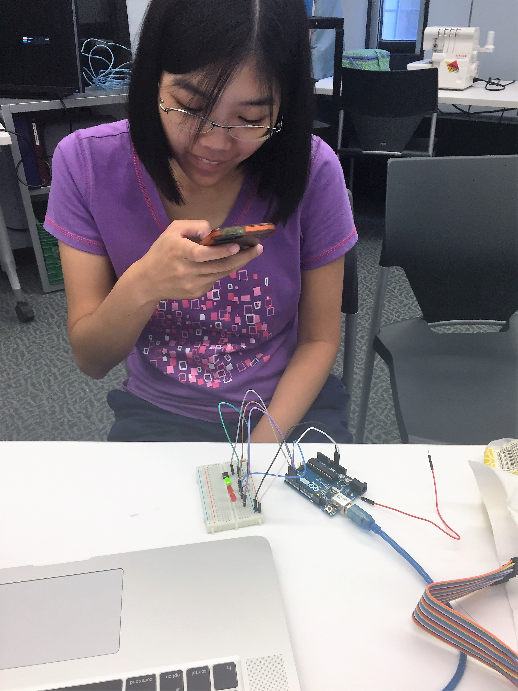

Semaphore Studio307
Open Hours for Winter 2017:
Mon: 12-5 PM
Tue: 1-6 PM
Wed: 1-6 PM
Thu: 12-4 PM
*Check our Calendar for updates to our Open Hours, programming, and reservations.

About 307
Semaphore Studio 307 was initially proposed as an extension of the Semaphore Research Cluster in the Faculty of Information and intended to be a more accessible, open, and hands-on version of Semaphore. Given: the number of courses in the Faculty of Information requiring or allowing material deliverables; the emphasis on participatory learning and creation as a crucial part of library programming and important skillset for future librarians; and the research interests of our students and faculty across concentrations, the absence of an accessible creative space was a problem. Semaphore Studio 307 is intended to fill that gap. This year, 2016-2017, is a pilot for the space. Funding and administrative support for Studio307 come from TechFund, Semaphore and the Faculty of Information.Goals for 307
As a result of a community consultation process (outlined below), four high level goals were identified for Studio307:- This is a noisy space
- This is a creating space
- This is a dynamic space
- This is a welcoming space
Consultation process and worksheets
In designing the consultation process, we took inspiration from Nancy Fried Foster and Susan Gibbons’ methods when they undertook a massive renovation of the library at the University of Rochester (2007). While their research spanned two years and a range of methods from day-mapping to photo-surveys, we borrowed two that were fitting for this particular project and feasible to complete in our time window: draw-and-write responses and design sessions.To start the process, students were asked to complete community consultation worksheets that involved both drawing and writing about their ideal space (examples below). Recruitment methods included posters in the Bissell building, inclusion in the iWeekly email notice sent to all students and faculty, distribution of worksheets in classes, targeted recruitment of underrepresented groups like MMSt students, and personal, face-to-face recruitment. Fifteen students completed the worksheets (note: this was over the summer).
The second stage of this process involved a design workshop. Eleven people participated in the workshop. The workshop began with individual analysis of the submitted consultation worksheets to seek out common elements or themes. This was followed by small group analysis where participants were encouraged to discuss their individual interpretations. Finally, there was a large group discussion as a way of creating a composite based on our findings from the worksheets.
Based on our individual and group analysis of the worksheets, we came away with four major principles or goals for the space:
- (1) This is a noisy space. Many students asked for collaborative space where they could meet and design together in an environment where they were free to spread out, make a mess and discuss. Key to this was space arrangement. For example, a central work table or “commons” was present in many of the submitted worksheets and the group agreed this was indicative of a need for a collaborative and collegial environment as opposed to a space for quiet, self-directed study. Another key indicator were calls for programming or curriculum and an active, or populated space.
- (2) This is a welcoming space. Eight of the submitted worksheets included aspects or elements designed to either extend the space out into the wider iSchool community or welcome members of that community into the space. For example, there were requests for staff presence, open house hours, exhibit space, communication boards, workshops, and a booking system.
- (3) This is a creating space. This third finding speaks to specific requests for equipment and tools geared towards building, designing and creating across disciplines. These requests ranged from three students drawing or including sewing machines for cloth fabrication and wearable technology work to eight students calling for a large whiteboard in order to work on collaborative design projects. Specific technology or equipment requests included Arduino boards and sensors for civilian tech initiatives, Pi computers for exploration, a large monitor or HD television for demo presentations, and 3D printing/scanning equipment.
- (4) This is a dynamic space. This finding speaks to the diversity of the faculty and their corresponding needs. It was reflected in the repeated call for a variety of designated “stations” (e.g. a soldering station, a printing station, a workbench area, a sewing station), but also the divide between students seeking a space for collaborative design in traditionally screen-based environments (e.g. students interested in UX and Systems Design) and those wanting to work on more material or physical designs (e.g. MMSt students).
The following are a collection of worksheets filled out by students and staff as part of this initial community consultation planning.
If you'd like to fill out your own version, you can find blank copies of this worksheet here. They can be submitted by emailing semaphorestudio307@gmail.com or pushing to this repository.
Images are links to pdf files.


The about us stuff that's on every page....
Studio307 is a student-run studio workspace within the Faculty of Information at the University of Toronto. It's located in Rm 307 of the Claude T. Bissell Building (140 St. George Street) and supported by Semaphore, TechFund, the Inforum and student volunteers and staff.
- See a list of available equipment
- Find out how to get involved
- Access tip sheets and tutorials
- Learn about the space and its creation
- Email us at semaphorestudio307@gmail.com.